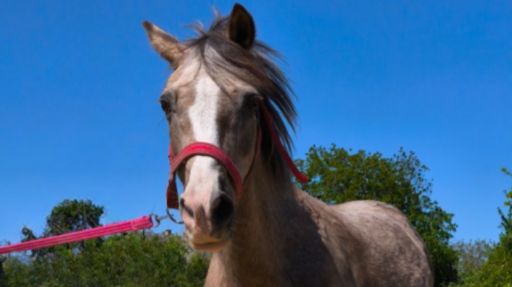

Szakértelem és szeretet
Szűcs Anikó vagyok, több mint 10 éves tapasztalattal várom a legkisebb lovasokat. A Jázmin Lovasudvart azért hoztam létre, hogy a gyerekek ne egy rideg sportközpontban, hanem barátságos, családi környezetben ismerhessék meg ezeket a csodálatos állatokat.
Nálunk Jázmin és Mary Lou nem csak lovak, hanem igazi családtagok. Ez a nyugalom és türelem teszi lehetővé, hogy a gyerekek szorongás nélkül, tiszta örömmel üljenek nyeregbe.
Négylábú munkatársaink
Ismerkedjen meg udvarunk békés és barátságos lakóival

Jázmin
Udvarunk névadója, egy végtelenül nyugodt és türelmes kanca. Kifejezetten a legkisebbek nagy kedvence, aki imádja a kényeztetést és a lassú sétákat.

Mary Lou
Igazi egyéniség, aki minden gyereket levesz a lábáról. Megbízható társa az oktatásnak, legyen szó az első barátkozásról vagy futószáras lovaglásról.